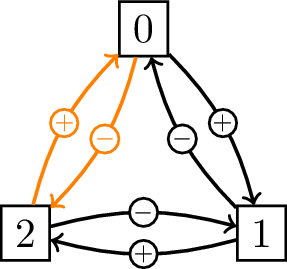

第12回 アカデミックスキルII C言語(5) レポート課題「クイズ番組のパラドックス」を検証しよう
Table of Contents
1 このページの更新履歴
2 レポート課題
2.1 課題
以下の「クイズ番組のパラドックス」を考える．なお，パラドックス(paradox)とは，荒っぽく言うならば, 「 直感的に正しいと感じる解答 と, 論理的に妥当な解答 が異なる問題 」のこと．
クイズの状況は以下の通り：
- 登場人物は，あるクイズ番組の「司会者」と「解答者」の二人．
- 解答者の前に3つの箱(A, B, C)がある．そのうち1つだけに当たりの豪華景品が入っており，残りの2つは空っぽ．
- 解答者にとっては，どの箱も同じように見えるが，司会者は，どの箱に景品が入っているかを知っている．
- 解答者は，景品の箱を当てると中の景品をもらえる．
この状況の下で，以下の手続きでクイズ番組が進められる．
- まず，解答者が，箱の中から1つ(例えば，A)を選択する．
- 次に，司会者が，残りの箱のうち1つ(例えば, B)を開けて中が空であることを見せる．
- ここで，解答者は，最初に選んだ箱(A)を，残っているもう1つの箱(この場合, C)に変更してもよい．
このとき，解答者は 選ぶ箱を変更する ことで，正解する確率を上げられるだろうか？
この問について，定量的に回答しなさい．具体的には，まず，
- 変更しない場合の正解確率(確率A)
- 手続き 5 で解答者の行動が終了する(手続き 6, 7が無い場合)ときに正解する確率はいくらか？
- 変更した場合の正解確率(確率B)
- 手続き 6, 7 で解答者が選択を変更した場合に正解する確率はいくらか？
を，それぞれ，確率的シミュレーションによって推計しなさい．
次に，得られた推計結果から，上記 A の確率よりも B の確率の方が大きいか否かについて論じなさい． 必要に応じて，グラフや図を用いてもよい．
2.2 提出するもの，提出方法および〆切
2.2.1 提出するもの
以下の 2つのファイル を提出せよ
- 確率A および 確率B の 推定結果 および 推定結果に基づく主張 (i.e. 「選ぶ箱を変更することで正解確率が上昇する」もしくは「選ぶ箱を変更しても正解確率は変化しない」).
- LaTeX などを用いて 整形された ものが望ましい(その場合は PDF フォーマットで提出せよ)が，整形されていないただのテキストでもよい．
- 図やグラフなどを適宜用いて見易くしたものを歓迎する．本文とは別のファイルで図やグラフを提出する場合(PDF フォーマットに限る)は, 本文中でどのファイルを参照すればよいかを明示すること．
- 計推定結果や図/グラフが複数のファイルに分かれている場合は,
tarコマンド(後述)を用いて アーカイブ すること．
- 確率を推計するのに用いた C/C++ プログラムの ソースファイル.
- コメント(
//の後は全てコメントと見なされる)をなるべく多く用いて，それぞれの処理をどのような意図で行なっているのかを記述すること． コメントが不十分なソースファイルについては減点する可能性がある - 複数のファイルに分かれている場合は,
tarコマンド(後述)を使ってアーカイブすること．
- コメント(
2.2.2 提出方法
学務情報システム より提出
2.2.3 〆切
7月4日(金) 午後 17:00
2.3 複数のファイルを1つのファイルまとめるコマンド (tar)
複数のファイルを1つのファイル(書庫 ファイルと呼ばれる)にまとめる(アーカイブ すると呼ぶ)には，
端末から tar というコマンドを使う．
参考リンク
3 自分でプログラムを作成する上で注意すること
3.1 インデントをつけること
for 構文や if 構文を組み合わせて使うと，それぞれの処理が「どのブロック内で行なわれているのか」が判りづらくなる．
このような場合には，階層の深さに応じて，先頭の文字の前に適当にスペースを入れる( インデント する，と言う)ことで，
読み易い(つまり，失敗しにくく，ミスを発見し易く，再利用し易い)ソースコードを構築できる．
例えば, for による繰返しの中で if...else による条件分岐を行なう以下のソースコードを見てみよう.
1: // 生成した乱数のうち，奇数と偶数の数をカウントする 2: #include <iostream> // 標準入出力ライブラリを読み込む 3: #include <stdlib.h> // 乱数を扱うためのライブラリを読み込む 4: #include <time.h> // 時間に関するライブラリを読み込む 5: using namespace std; // std という名前空間を使うことを宣言 6: 7: int main ( void ) 8: { // main 関数ブロックの始まり 9: int N = 1000; // 生成する乱数の数 10: int n_odd = 0; // 奇数の数を格納する変数 11: int n_even = 0; // 偶数の数を格納する変数 12: srand((unsigned int)time(NULL)); // 乱数を初期化 13: 14: // 繰返し処理 15: for ( int i = 0; i < N; ++i ) 16: { // for ブロックの始まり 17: int r = rand(); // 乱数を発生させる 18: if ( r % 2 == 1 ) // 「2で割った余りが1か否か」で奇数か偶数かを判定する 19: { // 真の場合のブロックの始まり 20: ++ n_odd; // 奇数の数を1つ増やす 21: } // 真の場合のブロックの終わり 22: else 23: { // 偽の場合のブロックの始まり 24: ++ n_even; // 偶数の数を1つ増やす 25: } // 偽の場合のブロックの終わり 26: } // for ブロックの終わり 27: 28: // 生成された乱数の数と，その奇数, 偶数の内訳を表示する 29: cout << "乱数の数: " << N << endl; // 30: cout << "奇数の数: " << n_odd << endl; 31: cout << "偶数の数: " << n_even << endl; 32: 33: return 0; 34: } // main 関数ブロックの終わり
このプログラムで行なわれる処理は，全部で3つの深さの階層を持ち，1段階階層が深くなるごとに2文字づつインデントしている．
- 最も浅い階層(深さ1. インデント2字)
- 8〜34行目の
main関数ブロック内 - 2番目に深い階層(深さ2．インデント4字)
- 16〜26行目の繰り返し処理ブロック内
- 最も深い階層(深さ3. インデント6字)
- 19〜21行目の真の場合の処理ブロック内および 23〜25行目の偽の場合の処理ブロック内
こうすることで，12行目の乱数初期化や29行目以降の結果表示が繰返しブロックの外にある(つまり，1度づつしか実行されない)ことや，
17行目の乱数生成処理や20行目の n_odd の値を1つ増やす処理が，それぞれ，異なる階層にあることが一目瞭然となる．
このソースコードは，以下のようにインデントを揃えなくても正常は動くが，上記のような階層構造が判然とせず，大変読み難い．
1: // 生成した乱数のうち，奇数と偶数の数をカウントする 2: #include <iostream> // 標準入出力ライブラリを読み込む 3: #include <stdlib.h> // 乱数を扱うためのライブラリを読み込む 4: #include <time.h> // 時間に関するライブラリを読み込む 5: using namespace std; // std という名前空間を使うことを宣言 6: 7: int main ( void ) 8: { // main 関数ブロックの始まり 9: int N = 1000; // 生成する乱数の数 10: int n_odd = 0; // 奇数の数を格納する変数 11: int n_even = 0; // 偶数の数を格納する変数 12: srand((unsigned int)time(NULL)); // 乱数を初期化 13: 14: // 繰返し処理 15: for ( int i = 0; i < N; ++i ) 16: { // for ブロックの始まり 17: int r = rand(); // 乱数を発生させる 18: if ( r % 2 == 1 ) // 「2で割った余りが1か否か」で奇数か偶数かを判定する 19: { // 真の場合のブロックの始まり 20: ++ n_odd; // 奇数の数を1つ増やす 21: } // 真の場合のブロックの終わり 22: else 23: { // 偽の場合のブロックの始まり 24: ++ n_even; // 偶数の数を1つ増やす 25: } // 偽の場合のブロックの終わり 26: } // for ブロックの終わり 27: 28: // 生成された乱数の数と，その奇数, 偶数の内訳を表示する 29: cout << "乱数の数: " << N << endl; // 30: cout << "奇数の数: " << n_odd << endl; 31: cout << "偶数の数: " << n_even << endl; 32: return 0; 33: } // main 関数ブロックの終わり
3.2 変数には意味を持たせ，コメントを多用すること
C++ では, // から行末まではコメントと見なされる．それぞれの行について，どんな処理を意図しているのかをコメントするように意識しよう．
コメントの無いプログラムは大変読み難い．以下のプログラムは N 個発生させた乱数のうち「ある性質をもつもの」だけをカウントして
表示するものなのだが，判るだろうか？
1: #include <iostream> 2: #include <stdlib.h> 3: #include <time.h> 4: using namespace std; 5: 6: int main ( void ) 7: { 8: int N = 10; 9: int n = 0; 10: srand((unsigned int)time(NULL)); 11: 12: for ( int i = 0; i < N; ++i ) 13: { 14: int r = rand(); 15: int is = 0; 16: for ( int d = 2; d < r; ++ d ) 17: { 18: if ( r % d == 0 ) 19: { 20: is = 1; 21: d = r; 22: } 23: } 24: if ( is == 0 ) 25: { 26: cout << "r: " << r << endl; 27: ++n; 28: } 29: } 30: cout << "N: " << N << endl; 31: cout << "n: " << n << endl; 32: 33: return 0; 34: }
4 課題のすすめ方
4.1 3つの箱の中から1つを選び，選んだ箱が正解かどうかを表示させてみよう
まず，3つの箱からユーザー(解答者)が1つを選び，それが正解かどうかを表示させるプログラムを作ってみよう． だいたい次のような処理を順に行なえばよさそうだ．
- 正解の箱の番号をランダムに作る
<stdlib.h>ライブラリに含まれているstd::rand()関数を使えば0以上RAND_MAX以下の整数をランダムに発生させられる．- 乱数の「種」は同じく
<stdlib.h>に含まれるstd::srand()関数を用いて初期化できる．さらに, 初期化した後rand()を4〜5回「空打ち」しておくと, よりランダム性が増す． rand()の出力を予測できなくするには,std::srand()に与える種として<time.h>ライブラリに含まれるtime()関数の出力を用いる．- ある整数
Mについて,0以上M以下の整数をランダムに発生させるには，以下の2つの方法がある． 下記の例は，いずれも，生成された乱数を用いて整数(int)型変数collect_boxを初期化する(ただし,Mはint型整数として宣言済みとする)．rand()をRAND_MAXで割って作成した 0以上1以下の実数乱数にMを乗じた後，整数型に変換するint collect_box = (int) ( ( (double) rand() / (double) RAND_MAX ) * (double) M );
rand()をMで割った余りを用いるint collect_box = rand() % M;
%は余りを求める演算子で,a % bはaをbで割った余りを返す．
- ユーザー(解答者)に番号を入力させる
- ユーザーからの入力を取り込むには,
<iostream>ライブラリに含まれる標準入力std::cinと入力演算子>>を用いる. 例えば, (定義済み)の整数(int)型変数input_boxに標準入力から値を取り込むには,cin >> input_box;
とする．
- ユーザーからの入力を取り込むには,
- 正解の箱の番号と解答者が選んだ番号が一致しているか否かを判定し，判定結果に応じて「正解」もしくは「ハズレ」を表示させる
- 条件判定には
if...else...構文を用いる． - 正解の箱の番号および解答者が選んだ番号を，それぞれ，整数(
int)型変数collect_boxおよびinput_boxに代入している場合, これらが一致する(正解)場合とそうでない(不正解)の場合で処理を切り替えるには, 以下のように記述する．if ( collect_box == input_box ) { // 正解の場合の処理ブロック } else { // 不正解の場合の処理ブロック }
- 条件判定には
長江が作ったサンプルプログラムは以下の rep-3in1.cpp である．
- 14〜15行目
- 正解の箱の番号を0〜2の中からランダムに選ぶ．ここでは, 0, 1, 2 のいずれかをランダムに生成する方法として，
rand()で生成された整数を2で割った余りを用いている．15行目 で用いられる%は「余り」を求める演算子．// 正解の箱(0, 1, 2)をランダムに決める int collect_box = rand() % 3; // % は「余り」を求める演算子
- 17〜20行目
- 解答者(ユーザー)が入力した箱の番号を
input_boxという名前の変数に格納する．// ユーザーに箱の番号を入力させる int input_box; // 入力された箱の番号を格納する変数 cout << "箱の番号を入力して下さい (0, 1, 2)?-> "; cin >> input_box; // 標準入力から箱の番号を取り込む
18行目では，解答者が選んだ箱の番号を格納する変数
input_boxを整数(int)型として宣言し， 20行目で標準入力cinから値を取り込んでいる． - 22〜32行目
- 正解か否かを判定して表示させている．
// 正解か否かを判定 if ( collect_box == input_box ) // if 文の条件を記述(正解の箱番号と入力された箱番号が一致していれば真) { // 条件が真の場合のブロックの始まり cout << "!!! 正解です !!!" << endl; // 正解と表示 } // 条件が真の場合のブロックの終わり else { // 条件が偽の場合のブロックの始まり // ハズレのメッセージと正解を表示 cout << "残念，ハズレ" << endl << "正解は " << collect_box << "でした" << endl; } // 条件が偽の場合のブロックの終わり
まず，23行目の
ifでは 15行目 で与えたcollect_boxと20行目でユーザーが入力したinput_boxが 一致するかどうかを判別しており，一致している場合は 24行目〜26行目のブロックが実行される． 次に，27行目のelseはcollect_boxとinput_boxが一致しない場合に その後の 28行目〜32行目のブロックを実行することを指示している．
4.2 上で作った「3つの箱から1つを当てるクイズ」を N 回繰り返し，正解数や正解率を求めよう
次に，このプログラムを使って, 「3つの箱から1つを選んだとき，それが正解である確率」を推定してみよう．
具体的には, このプログラムを N 回繰り返し, その中で何回正解したかをカウントして正解率を表示させるプログラムを作ってみよう．
このための手続きは，以下のように書き下せるだろう．
- 「3つの箱から選んだものが正解かどうか判定するプログラム」を 自分で
N回実行し，そのうち正解した回数を 自分で 数えておく(正解した回数をn回とする) nをNで割ったものを 自分で 計算し，正解確率の推定値とする．
この 自分で行う 部分を 計算機に任せる ことで「数え間違い」や「計算間違い」を減らし，所要時間も(多分)短縮できるはずだ．
- 繰返し処理を用いる際には，やりたいことを以下の3つに分けて考えるとよい．
- 繰り返し前の処理
- 繰り返し回数
Nを宣言・初期化する. - 正解数
nを宣言し,0で初期化する
注意 この処理を繰り返しの中に入れてしまうと，繰り返すたびにn=0となってしまう．
- 繰り返し回数
- 繰り返し処理
- 正解の箱の番号をランダムに生成する.
- ユーザー(解答者)に番号を入力させる.
- 正解していたら, 正解数
nを1つ増やす.
- 繰り返し後の処理
- 繰り返した数
N, 正解数nおよび正解率n/Nを表示する
注意 この処理を繰り返しの中に入れてしまうと，繰り返すたびに正解数と正解率が表示されるので邪魔．
- 繰り返した数
- 繰り返し前の処理
for構文を用いて, ある処理をN回繰り返すには, 以下のように記述する(ただしNはint型の整数として宣言済みで，正の値が格納されているとする):for ( int i = 0; i < N; ++i ) { // 繰り返す処理ブロック }
- 正解率を計算するために
n/Nとすると，C++のインタプリタ(翻訳機)は「整数nを整数Nで割った商」を計算する命令と解釈してしまうので， それぞれの変数の前に(double)をつけて実数(double)型に変換してから計算すること．(double) n / (double) N
長江が作ったサンプルプログラムは，以下の rep-3in1_Ntimes.cpp である．
- 14〜16行目
- 繰り返し回数と正解の数の宣言および初期化
// 繰り返しの数と正解した数 int N = 10; // 繰り返し回数 int n = 0; // 正解の数(0で初期化)
15行目 で繰り返し回数
Nを, 16行目で正解した数を，それぞれ整数(int)型で宣言し，初期化している．なお
Nやnをfor文の中で宣言したり，初期化してはいけない． - 18〜20行目, 43行目
for文の宣言, ブロックの開始と終了// 繰り返し処理 for (int i = 0; i < N; ++i) // for 文の条件を宣言(i=0で初期化;i < N の間繰り返し;繰り返す際にiを1つ増やす) { // ↓↓↓↓↓ for ブロックここから ↓↓↓↓↓
} // ↑↑↑↑↑ for ブロックここまで ↑↑↑↑↑- 21〜40行目
- 3つの箱の中から選んだ1つが当たりか否かを判定して表示させる処理
// 正解の箱(0, 1, 2)をランダムに決める int collect_box = rand() % 3; // % は「余り」を求める演算子 // プレイヤーに箱の番号を入力させる int input_box; // 入力された箱の番号を格納する変数 cout << "箱の番号を入力して下さい (0, 1, 2)?-> "; cin >> input_box; // 標準入力から箱の番号を取り込む // 正解か否かを判定 if (collect_box == input_box) // if 文の条件を記述(正解の箱番号と入力された箱番号が一致していれば真) { // 条件が真の場合のブロックの始まり cout << "!!! 正解です !!!" << endl; // 正解と表示 ++n; // 正解した数を1つ増やす } // 条件が真の場合のブロックの終わり else { // 条件が偽の場合のブロックの始まり // ハズレのメッセージと正解を表示 cout << "残念，ハズレ" << endl << "正解は " << collect_box << "でした" << endl; } // 条件が偽の場合のブロックの終わり
基本的には
rep-3in1.cppの14〜32行目と全く同じ処理．唯一の違いは, 正解した場合に 33行目 で 正解した回数nの値を++演算子を用いて1つ増やしていること． - 45〜48行目
- 試行回数，正解した数および正解確率を表示
// 正解した数と正解確率を表示 cout << "試行回数 (N): " << N << endl; cout << "正解した数 (n): " << n << endl; cout << "正解確率 (n/N)*100 % : " << ( (double) n / (double) N ) * 100.0 << endl;
48行目では，まず，正解した確率
n/Nを計算するために，もともと整数(int)型として定義されている 変数nとNを，実数(double)型に変換している．次に，正解した確率のパーセンテージを表示するためにn/Nに100.0を乗じている．
4.3 解答者が選んだ箱と異なる空箱(司会者が選ぶ箱)を表示させよう
クイズ番組の手続きでは，解答者が箱を選んだ後，司会者が残った箱のうち1つを開き，空箱であることを見せる． この「解答者が選んだ箱以外の空箱の1つ(= 司会者が選ぶ箱)」を決める部分をプログラムで作ってみよう．
まず，司会者が選ぶ箱を決めるルールを以下のように決める：
- 解答者が選んだ箱 と 正解の箱 が異なる場合は，残る1つを 司会者が選ぶ箱 とする
- 解答者が選んだ箱 が 正解の箱 と同じ場合は，残る2つの箱の どちらか一方をランダムに選び, それを 司会者が選ぶ箱 とする
4.3.1 解答者が選んだ箱 と 正解の箱 が異なる場合
まず，1番のルールをプログラムで実装するのは比較的カンタンである． この場合は 解答者が選んだ箱 と 正解の箱 と 司会者が選ぶ箱 の番号が全て異なり， その 合計 が常に 0 + 1 + 2 = 3 であるから, 司会者が選ぶ箱 の番号は，以下の式で求められる．
司会者が選ぶ箱の番号 = 3 - (解答者が選んだ箱の番号 + 正解の箱の番号)
4.3.2 解答者が選んだ箱 と 正解の箱 と同じ場合
次に，2番のルールは少し厄介である． 手始めに場合分けして考えると, 司会者が選ぶ箱 は
- 解答者が選んだ箱(=正解の箱)が0番
- 「1番」か「2番」のいずれか
- 解答者が選んだ箱(=正解の箱)が1番
- 「0番」か「2番」のいずれか
- 解答者が選んだ箱(=正解の箱)が2番
- 「0番」か「1番」のいずれか
となる. 2つの選択肢のいずれか一方をランダムに選択するには，コインを1枚投げて, 表なら最初の選択肢, 裏なら2番目の選択肢 を選ぶことにすればよい．
このルールは，2段階の if 文を用いて以下のように実装できる:
1: int collect_box = rand() % 3; // 正解の箱(0, 1, 2)をランダムに生成 2: int head_or_tail = rand() % 2; // 2つの選択肢をランダムに選ぶためにコインの表(=1)と裏(=0)をランダムに生成 3: int open_box; // 司会者が選ぶ箱 4: 5: if ( collect_box == 0 ) // 正解が 0 番の場合 6: { 7: if ( head_or_tail ) // 正解が 0 番でコインが表なら 1 番を選ぶ 8: { open_box = 1; } 9: else 10: { open_box = 2; } // 正解が 0 番でコインが裏なら 2 番を選ぶ 11: } 12: else if ( collect_box == 1 ) // 正解が 1 番の場合 13: { 14: if ( head_or_tail ) // 正解が 1 番でコインが表なら 0 番を選ぶ 15: { open_box = 0; } 16: else 17: { open_box = 2; } // 正解が 1 番でコインが裏なら 2 番を選ぶ 18: } 19: else if ( collect_box == 2 ) // 正解が 2 番の場合 20: { 21: if ( head_or_tail ) // 正解が 2 番でコインが表なら 1 番を選ぶ 22: { open_box = 1; } 23: else 24: { open_box = 2; } // 正解が 2 番でコインが裏なら 2 番を選ぶ 25: }
これでも実装上は問題ないが，もう少し洗練された方法を考えてみよう．
- コインを投げて表が出たら 正解の箱の番号 + 1 を，裏が出たら 正解の箱の番号 - 1 を 司会者が選ぶ箱 とする．
- ただし，正解の箱が 2 番でコインが表の場合には 司会者が選ぶ箱 は 0 番とする．逆に，正解の箱が 0 番でコインが裏の場合には 司会者が選ぶ箱 は 2 番とする．
これは，下図のように箱を円状に並べておいて，コインの表が出たら正解の箱の右隣(時計方向の隣)の箱を，裏が出たら正解の箱の左隣(反時計方向の隣)の箱を選ぶ方法に等しい．

これなら, -1 もしくは 1 を 50% づつの確率で生成し，これを正解の箱の番号に加えたものを 司会者が選ぶ箱 の番号とすればよい．
-1 もしくは 1 を 50% づつの確率で生成させるには，
( rand() % 2 ) * 2 - 1;
とすればよい．その理由は以下のように順に考えると明らか．
- 最初の括弧の中の
rand() % 2は0か1のいずれか - これを2倍した値は
0か2のいずれか - そこから
1を引いた値は-1か1のいずれか
少し工夫が必要なのは「0番の左(-1 番)」と「2番の右(3 番)」を，それぞれ「2番」と「0番」と
読み替える(上図のオレンジ色の矢印に対応)方法だ．これは,
司会者が開く箱の番号 = 正解の箱の番号 - 2
とすればよい．その理由は，司会者が開ける箱が「0番の左」もしくは「2番の右」となる状況では，
- 正解が0番なら，司会者が開く箱は 2番
- 正解が2番なら，司会者が開く箱は 0番
の二通りのみを考えればよいからである．
ここまでの手続きは，以下のコードで実装できる．
1: int collect_box = rand() % 3; // 正解の箱(0, 1, 2)をランダムに生成 2: int open_box; // 司会者が選ぶ箱 3: 4: int pls_or_mns = ( rand() % 2 ) * 2 - 1; // 左(-1) もしくは 右(1) のいずれかをランダムに生成 5: open_box = collect_box + pls_or_mns; // 司会者が選ぶ箱は正解の箱の左か右 6: 7: if ( open_box < 0 || open_box > 2 ) // 司会者が選ぶ箱が「0番の左」もしくは「2番の右」になった場合 8: { open_box = 2 - collect_box; } // 正解が0番なら司会者は2番を，正解が2番なら司会者は0番を選ぶ
最初のコードと比べて随分シンプルになったのではないだろうか？
4.3.3 解答者が選んだ箱と正解の箱から，司会者が選ぶ箱の番号を決めるプログラム
以上の考え方に基づいて長江が作ったサンプル・プログラムが, 以下の rep-another1.cpp である．
4.4 「3つの箱から1つを当てるクイズ」を「司会者が開けた空箱を見て，変更するか否かを選択できる」ように拡張しよう
3つの箱の中から正解を探すプログラム rep-3in1.cpp を，
「司会者が空箱を開けた後に，選ぶ箱を残った箱に変更するか否か」を選択できるようにしたのが
下記のプログラム rep-ex3in1.cpp である．
解説
- 22〜34行目
- 司会者が開ける箱を決める.
rep-another1.cppの22〜34行目と全く同じである． - 36〜42行目
- 残った箱に変更するか否かをユーザー(解答者)に選択させる
// 箱を変更するか否かを選択する int change_box = 3 - (input_box + open_box); // 変更先の箱の番号 int is_change; // 変更する(=0以外)か変更しない(=0)を格納する変数 cout << "司会者が箱 " << open_box << " を開け，空であることが判りました" << endl << "選択する箱を " << input_box << " から " << change_box << " に変更しますか(1:yes / 0:no)?-> "; cin >> change_box; // 標準入力から変更するか否かを取り込む
37行目で 変更先の箱の番号(
change_box) を決定している．その際，- 解答者が選んだ箱(
input_box) と 司会者が開けた箱(open_box) と 変更先の箱(change_box) が全て異なり，その番号の合計は3である．
ことを活用している．
- 解答者が選んだ箱(
- 44〜46行目
- ユーザーが箱を変更した場合の処理
// 0以外が入力された場合は司会者が開けた箱に変更する if ( is_change != 0 ) { input_box = change_box; }
42行目で
is_changeに取り込まれた数値が 0 以外だった場合には， 選択する箱(input_box)を変更先の箱(change_box)に変更する． - 48〜59行目
- 正解か否かを判断し，表示する.
3in1.cppの22〜32行目と全く同じである．
4.5 その先へ
ここから先は，サンプルプログラム無しで進めてみよう．
4.5.1 「空箱が示された後に, 選択を変更できるクイズ問題」を N 回繰り返し，正解数や正解率を求めよう
- 「3つの箱から1つを選択するクイズのプログラム(
rep-3in1.cpp)」から, 「それをN回繰り返して正解数と正解率を求めるプログラム(rep-3in1_Ntimes.cpp)」へと拡張したように， 「司会者が空箱を開けた後に, 選んだ箱を変更できるクイズ問題(rep-ex3in1.cpp)」をN回繰り返して正解数と正解率を求めるプログラムへ拡張してみよう．
4.5.2 ユーザーによる意思決定(「解答者による箱の選択」や「空箱が示された後の選択の変更」)も計算機にさせよう
- ここまでは「解答者が最初に選ぶ箱」や「空箱が示された後で選択を変更するか否か」をユーザーに入力させているが, これを100回, 1000回, 1万回, …と繰り返すのは大変．
- 「空箱が示された後に, 選ぶ箱を変更するか否かで正解率がどのていど異なるか」を推計する際に， 「最初の箱の選択」や「箱を変更するか否か」が人間の手によって入力される必要性はない．そこで，これらの選択も計算機に行なわせる．
- 繰り返し処理における 解答者が選ぶ箱 の決定については,
- 予め決まった箱(例えば 0)を常に選択
- 正解の箱 と同様に 0, 1, 2 のいずれかをランダムに選択
- 予め決まった順番(0, 1, 2, 0, 1, 2…)で選択を変更
の3つが考えられるが, 理論的には (正解の箱の番号 と 解答者が選ぶ箱 が互いに独立な一様分布に従うのであれば), いずれを採用しても推定結果には影響しない (なので，1. が一番ラク).
- 繰り返し処理における「空箱が示された後に箱を変更するか否か」の決定についても, 同様に,
- ある決まった回数「変更しない」を選択し, その後, 同じ回数だけ「変更する」を選択する
- その都度「変更しない」か「変更する」のいずれかをランダムに選択
- 「変更しない」「変更する」を交互に選択する
など，色々な方法が考えられるが, やはりいずれを採用しても推定結果に影響しないので. 1. が一番ラク.
- 適当な
Nを与え(もしくは標準入力から取り込み)，最初のN回は「空箱が示された後も選択を 変更しない 」とし， 次のN回は「空箱が示された後で選択を 変更する 」として，それぞれの正解した数をn_stay, n_changeといった変数に 格納しておけばよいだろう．
5 TAさんのコード
TA さんにも課題に取り組んでもらいました． C/C++ はソースコードの書き方に自由度が高いため，同じ処理でも書き手によって見た目が大きく異なります． 他人のコードを読んで理解することは，プログラミングスキルの向上に欠かせません．ぜひ，参考にして下さい．
- 戸沼さん
- (http://gist.github.com/nagae/15ec905be63ef8ef3b93)
本人のコメント：- 扉の AA (ascii art) を用いたもので，演習室の環境下では文字化するものです．
- 1を修正してAAを用いないものです．
- プログラム内に試行回数を直に書いて正解率を出すものです．
- 標準入力で試行回数を入力し，その他は3と同じものです．
- 石黒さん
- (https://gist.github.com/nagae/6dbfd7b761cdcfd5bd07)